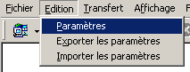
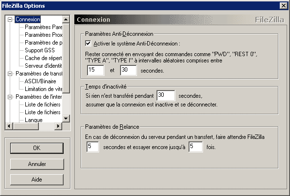

Configuration
Vue d'Ensemble:
FileZilla supporte beaucoup d'options de configuration que vous pouvez régler dans la boîte de dialogues "Options de FileZilla". Cliquez sur "Paramètres" dans le menu "Édition" pour ouvrir la boîte de dialogue.

Dans des conditions normales, vous n'avez pas à configurer FileZilla. FileZilla est fourni avec des réglages d'options par défaut qui sont optimisés pour la plupart des utilisateurs.
Les options sont divisées en plusieurs sections énumérées à gauche de la boîte de dialogue des Options. Cliquez sur une entrée de l'arborescence pour ouvrir la section correspondante.

Chaque page présente des rubriques séparées et leurs options associées: